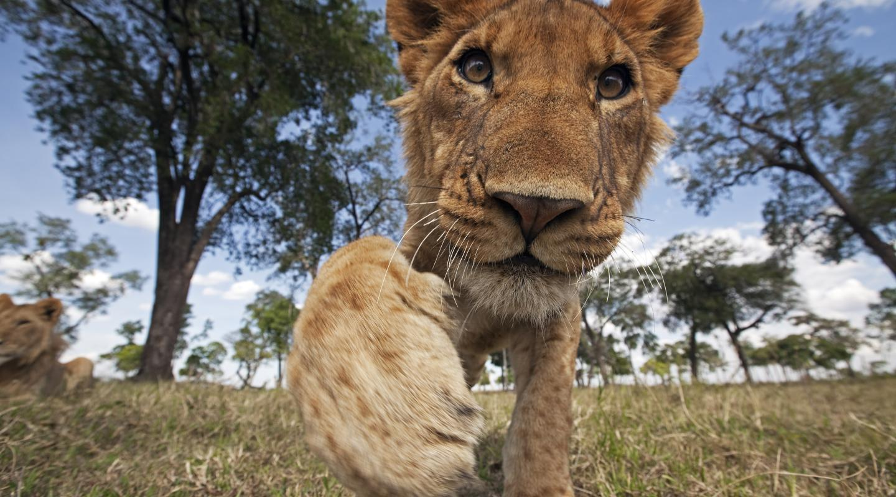
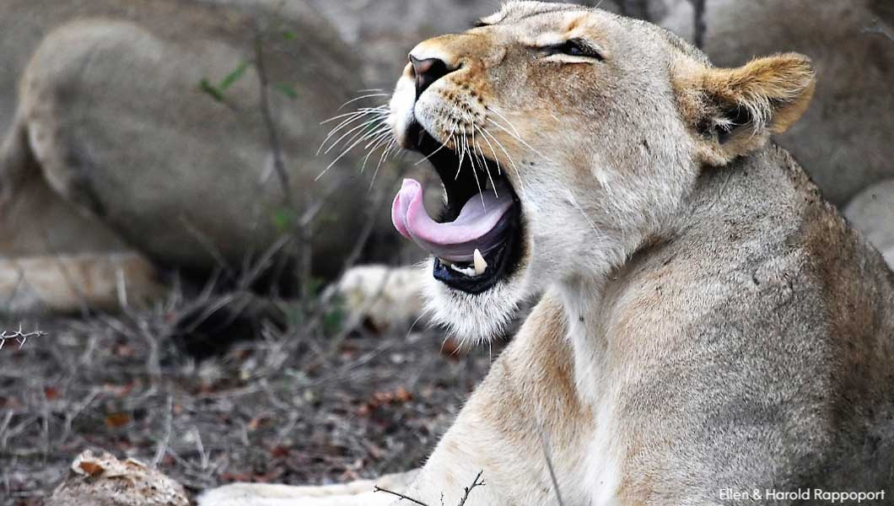
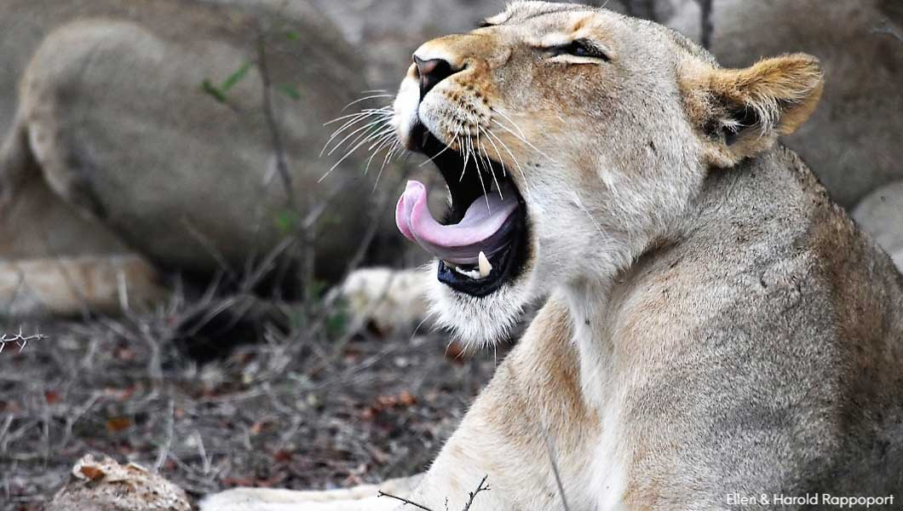

NEARLY ALL WILD LIONS LIVE IN AFRICA, BUT ONE SMALL POPULATION EXISTS ELSEWHERE
In the wild, there are two formally recognised lion subspecies. The African lion (Panthera leo leo) is found in Africa, below the Sahara desert. The Asiatic lion (Panthera leo persica) exists in one small population around Gir Forest National Park in western India.

 
